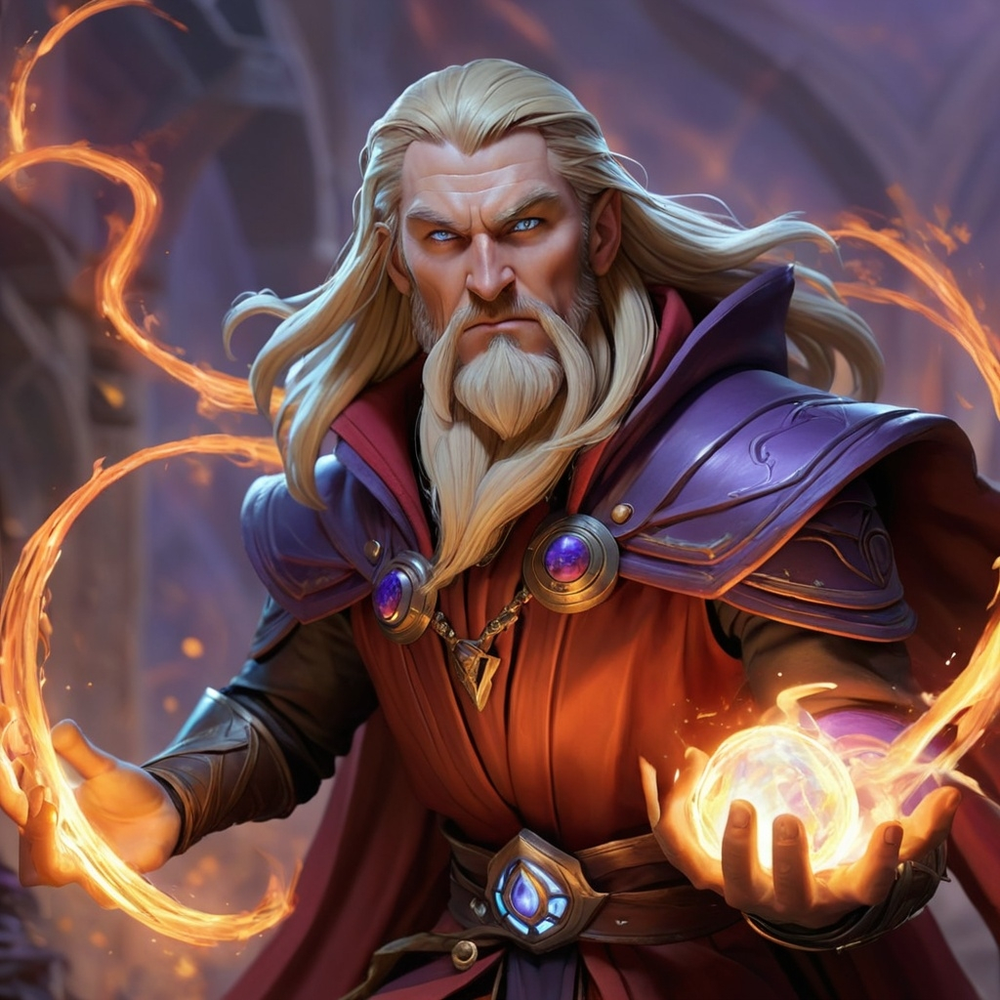
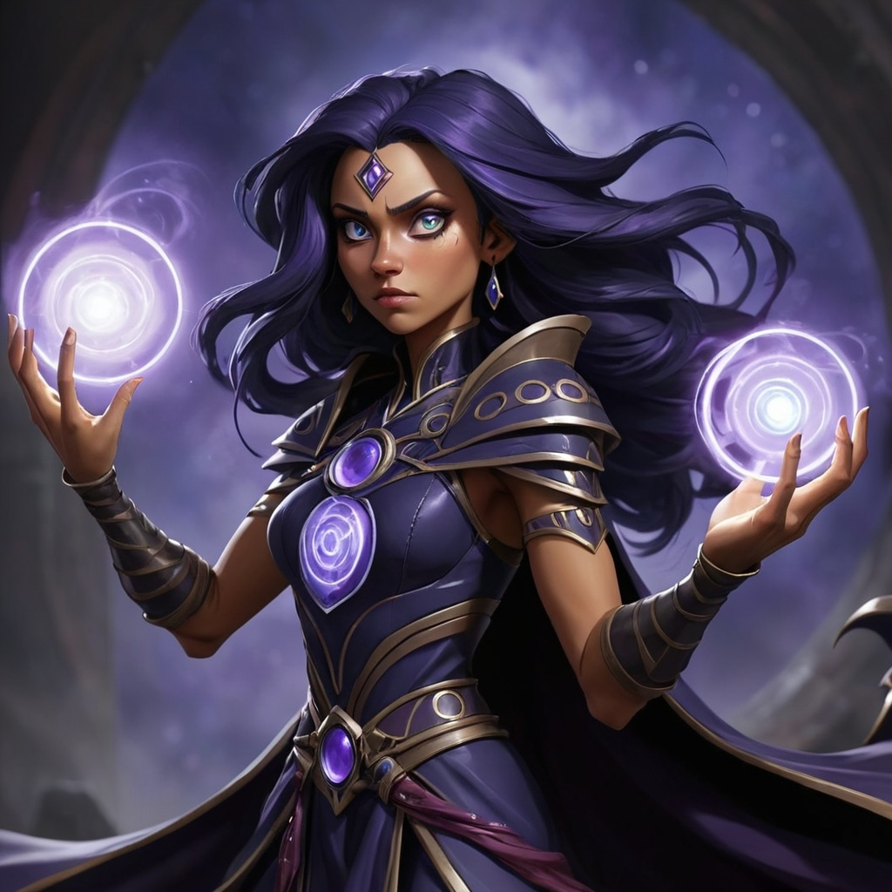
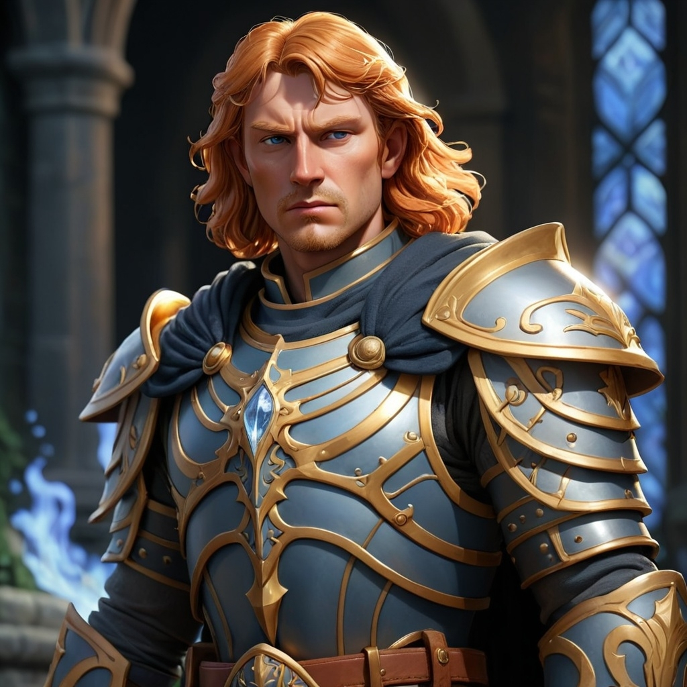

Kael'thor - Archmage of Emberdeep
Abilities: Fire Manipulation, Teleportation, Fate Weaving
Background: Kael'thor, born in the fiery depths of Emberdeep, was trained in the arcane arts from a young age. Now, as an Archmage, he weaves the threads of fate to control the balance of power in Elarion.
Lyssa Nyr - Void Seer
Abilities: Mind Control, Shadow Manipulation, Teleportation
Background: Lyssa Nyr is the last of the Void Seers, a race of mystics capable of seeing the future. Her powers have made her both a savior and a dangerous adversary to the realm.
Thorne - Warden of Solari
Abilities: Shielding, Solar Blasts, Flight
Background: Thorne is a revered figure in the realm of Solari. As the Warden of Light, he protects the kingdom from the forces of darkness that threaten to engulf it.